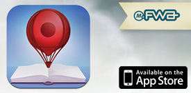
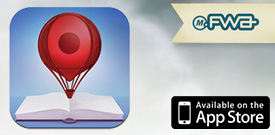

Sorriso Dia dos Pais
W/McCANN / Sorriso
Resumo do projeto salami brisket capicola spare ribs shank, short loin. Resumo do projeto salami brisket capicola spare ribs shank, short loin. Resumo do projeto salami brisket.

Produzimos tecnologia para agências de publicidade: De sites a games, de apps a instalações interativas.
Nossa especialidade é trabalhar junto com a equipe da agência, ajudando a viabilizar idéias, encaixar prazos e entregar resultados incríveis.
Resumo do projeto salami brisket capicola spare ribs shank, short loin. Resumo do projeto salami brisket capicola spare ribs shank, short loin. Resumo do projeto salami brisket.
Desenvolvidos em HTML5 e Canvas para conseguirmos a melhor experiência e performance.


Game de Messenger semelhante ao Draw Something.
Para este projeto utilizamos tecnologia P2P a fim de simplificar a infra necessária para hospedagem.
 

App de iPhone estilo FourSquare onde é possível fazer checkin em lugares imaginários.
Ganhador do FWA Mobile of the Day.
O grande desafio deste projeto foi utilizar animações já existentes e construir interações inteiramente em HTML5 com Canvas.
Resumo do projeto salami brisket capicola spare ribs shank, short loin. Resumo do projeto salami brisket capicola spare ribs shank, short loin. Resumo do projeto salami brisket.